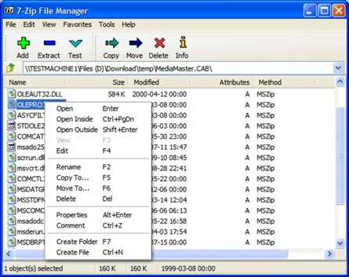
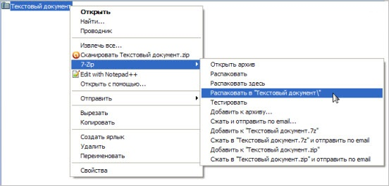
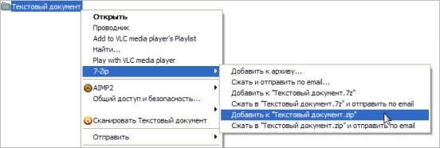
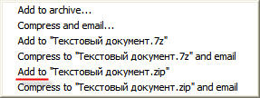
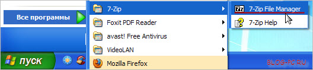
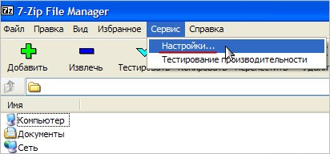
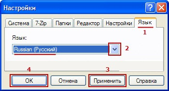

Меню
Описание программы Существует немалое количество различных архиваторов, среди них встречаются как платные, так и бесплатные утилиты. Некоторые поддерживают исключительно свой формат, иные являются мультиформатными. Производители жестких дисков беспрерывно соревнуются между собой, кто создаст винчестер большего объема. По большому счету, сегодня компьютерные пользователи не ощущают недостатка незанятого места на жестких дисках, тем не менее, программы-архиваторы с рынка не пропадают. 7-Zip – архиватор, распространяющийся бесплатно и отличающийся высокой степенью сжатия. Интерфейс утилиты схож с аналогичными платными программами, только выглядит он несколько проще и функционал у него не столь богатый. Действительно, набор функций конкурентных архиваторов гораздо больше, нежели у 7-Zip, но не факт, что все они пригодятся простому пользователю. Окно программы включает главное меню, файловый менеджер и панели инструментов. Это минимальный комплект, которого в большинстве случаев достаточно. Функциональные кнопки оснащены русскоязычными подсказками, однако справка доступна только в английском варианте. Иконки имеют простоватый вид, поэтому сторонникам современных графических эффектов и красоты следует присмотреться к иным архиваторам. После инсталляции, 7-Zip автоматически интегрируется в контекстное меню, поэтому для архивации необходимого файла достаточно кликнуть на нем правой кнопкой мыши и избрать соответствующий пункт. Утилита может отправлять архивы по E-mail, это очень удобно, поскольку многие пользователи создают их, чтобы быстрее добавлять данные к электронным письмам. 7-Zip великолепно архивирует файлы, поэтому большинство пользователей отдает предпочтение именно этой программе. По результатам тестирований, архивы, полученные после сжатия этой утилитой, оказываются самыми компактными. Для пользователей, стремящихся к максимальной экономии пространства на жестком диске, это может оказаться важнейшим фактором. 7-Zip поддерживает такие форматы: - для архивации - .7z, .bzip2, .gzip, .zip, .tar; - для разархивации и просмотра - .rar, .chm, .cab, .arj, .rpm, .z, .lzh, .cpio, .deb, .split. К основным особенностям программы 7-Zip следует отнести: - великолепную степень сжатия, которая обеспечивается компрессией LZMA; - возможность создания самораспаковывающегося архива для формата 7z; - работа из командной строки; - наличие плагина FAR Manager, Unreal Commander и Total Commander; - интеграция в оболочку операционной системы; - многоязычный интерфейс с функциями 2-х файлового менеджера; - наличие встроенной утилиты для тестирования производительности. Разработчики программы также позаботились о безопасности данных. Для этого в 7-Zip был интегрирован инструмент шифрования архивов.

Использование архиватора 7-Zip
Пользоваться 7-Zip тоже не составляет никакого труда. 1. Распаковка сжатых файлов в 7-Zip Допустим, у Вас есть файл, который упакован каким-либо архиватором. На компьютере этот архивный файл будет выглядеть примерно так: архивный файл или так: архивный файл Так как у Вас уже установлен 7-Zip, то при нажатии на этот файл левой кнопкой мыши (двойной клик) этот файл будет открываться. Все в порядке! Если Вам нужно распаковать этот файл, то при нажатии на него правой кнопкой мыши появится дополнительное меню выбора действий. Найдите строку 7-Zip. При наведении откроется еще одно подменю с выбором действий. Рекомендую выбирать: Распаковать в “Название файла”.

Таким образом, создается папка с названием запакованного файла Текстовый документ , и в эту папку распаковываются все файлы, которые были запакованы архиватором.
2. Сжатие файлов в 7-Zip
Рассмотрим такую же ситуацию, только теперь уже нужно сжать файл или папку с файлами.

При желании полученный архив можно переименовать, также нажав на него правой кнопкой мыши и выбрав функцию: Переименовать. Обратите внимание, что также есть возможность выбирать: Добавить к “Название файла.7z”. Расширение .7z это вид архивации, принадлежащий непосредственно программе 7-Zip и упакованные файлы с таким расширением предназначены для открытия этих файлов тоже такой же программой. Это значит, что если Вы упакуете файлы своей программой 7-Zip с расширением .7z, чтобы дать этот архив кому-нибудь, то, чтобы тот пользователь открыл этот файл, у него тоже должна быть установлен архиватор 7-Zip. А так как не 100% пользователей пользуются этой программой, рекомендую упаковывать файлы, чтобы было расширение .zip (как показано на снимке ранее). Так будете уверенны, что тот, кому Вы отсылаете этот файл, откроет его (если у него установлен другой архиватор).
Если контекстное меню не отображается на русском языке:

Для решения этой проблемки заходим в меню Пуск -> 7-Zip -> 7-Zip File Manager, как показано на снимке:

Далее идем в меню: Сервис -> Настройки:

Там во вкладке Язык выбираем повторно Русский язык (даже если он уже выбран), нажимаем Применить, а затем ОК:

Перезагружаем компьютер, чтобы настройки применились к контекстному меню.
Подводим итог:
Чтобы уменьшить размер файлов применяются архиваторы. Если у Вас какой-либо файл с расширением .rar или .zip не открывается, значит устанавливайте себе архиватор. Приведенный в этой заметке 7-Zip, это отличная бесплатная альтернатива платному аналогу WinRar. Распаковывайте файлы в папку, как было показано на снимке и, если нужно дать кому-нибудь архив, упаковывайте его с расширением .zip.